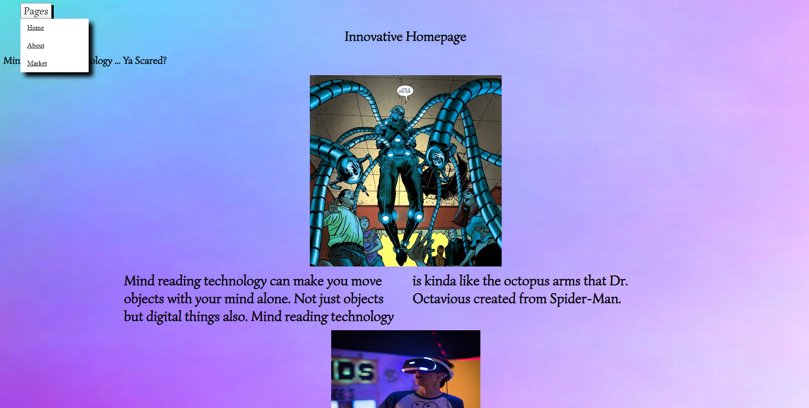

Zen Garden was a website with HTML already created. Our main purpose was mainly in the CSS. This was to test our knowledge in CSS and also to put our creativity to the test. The Css that I used for this website was changing a lot of colors and creating boxes around them. Then I also put in some moving images that blended in well with the boxes. With those boxes I used flexes boxes to adjust everything evenly so that the website would look nice. To be honest even though I didn't do any of the html I am proud of my design of this website.

My computing innovation website was about mind reading technology. We had to find a computing innovation which means something that involves technology or a computer. With all the research we created our own websites from scratch. At this time we were still learning about CSS or Cascading Style Sheets. So we created the website while learning. To be honest I think it is pretty good with my knowledge of CSS at the time. So for this Website I used HTML and CSS. I used the HTML to put in all the information using headers and paragraph tags. Then using CSS I used it to place the text where I wanted and added images related to the text. But there was more than one page that needed to be edited so I created links. These links were connected to other HTML files which had more information in them and those HTML files are more headers, paragraph tags, and images.
